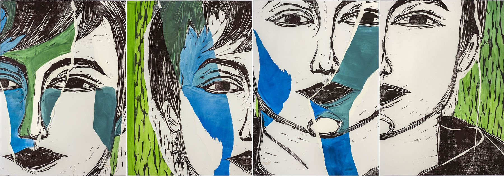
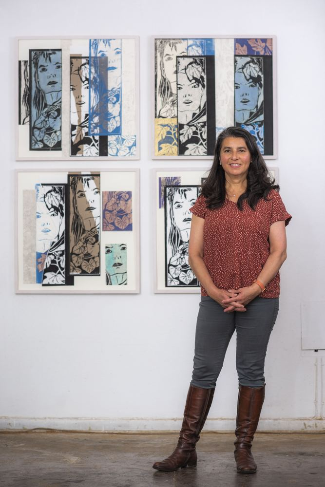

Antonio Blau-Grün, 2019Experimenteller Holzschnitt, Collage
Malerei · Holzschnitt · Collage
Ausdrucksstarke Holzschnitte und vielschichtige Malerei
Neben Malerei und Zeichnung liegt ein besonderer Teil meiner Arbeit auf dem Holzschnitt – geprägt von Kontrasten und feinen Details, die tief berühren. Entdecken Sie die Vielfalt meiner künstlerischen Ausdrucksformen.
Zu den Werken
Workshops
Linolschnitt selbst ausprobieren
Im Workshop arbeiten die Teilnehmerinnen und Teilnehmer mit meiner Unterstützung im Linolschnitt und erlernen Schritt für Schritt die grundlegenden Fähigkeiten – vom ersten Entwurf bis zum eigenen Druck.
Zu den Workshops
Die Künstlerin
Verónica Höft
Geboren 1967 in Chile, lebe und arbeite ich seit 1994 in Rheinland-Pfalz. In der Ateliergemeinschaft Leske-Höft-Winter in Bad Kreuznach entstehen meine Holz- und Linolschnitte, Collagen und Bilder – Arbeiten, in denen das menschliche Gesicht immer wieder im Mittelpunkt steht.
Zur BiografieAusgewählte Werke
Alle Werke70 × 50 cm, 2019
Auflage 3/4
Auflage 1/8
70 × 50 cm, 2019
Auflage 2/10